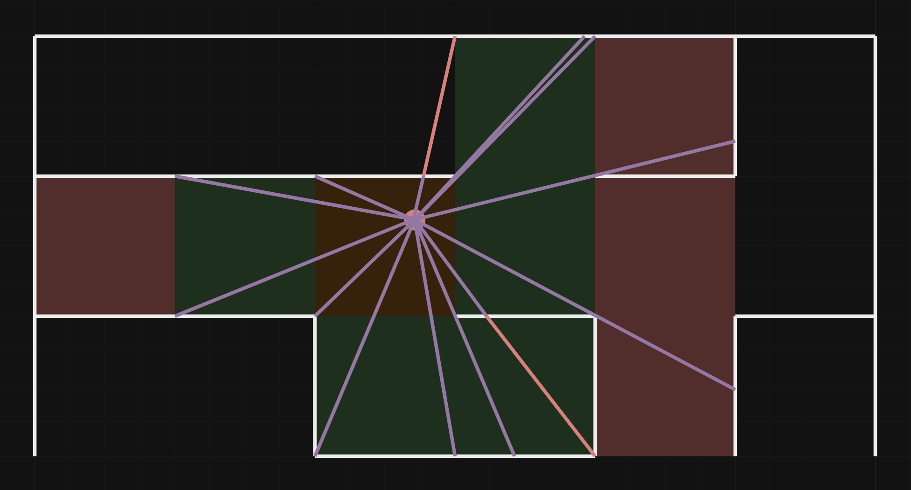

Présentation du projet
Un peu de contexte
Au début de l'année 2024, je décide de me lancer dans l'aventure de la création de mon premier jeu vidéo, en tant que développeur solo. L'objectif est de réaliser un projet assez ambitieux, à la fois pour le défi personnel, mais également pour enrichir mon portfolio.
Idée générale
Dans ce jeu coopératif à cinq, les joueurs sont téléportés dans un laboratoire imprégné d'une étrange énergie électrique. En explorant les lieux, ils découvrent que les expériences menées semblent tourner autour d'une gigantesque machine occupant une grande partie de la pièce. En quittant le laboratoire, ils réalisent qu'ils se trouvent au cœur d'un immense labyrinthe. Incarnant des personnages issus de diverses races et origines, ils devront unir leurs forces pour trouver la sortie et comprendre où ils sont, tout en cherchant un moyen de rentrer chez eux. Cependant, pénétrer dans le labyrinthe s'avère plus difficile que prévu, et ils devront avancer prudemment pour se préparer aux épreuves qui les attendent. Le jeu est fortement coopératif, c'est-à-dire que chaque joueur contrôle un personnage d'une certaine classe, et chaque classe est nécessaire à un moment de la partie, afin que chaque joueur ait son rôle à jouer.
Journal de bord
Introduction
L'objectif de ce journal de bord est de publier, un peu à la manière d'un blog, les différentes avancées du projet : les problèmes rencontrés, les nouvelles fonctionnalités, les prototypes, etc... Les éléments abordés peuvent être plus ou moins techniques, alors n'hésitez pas à me contacter si vous avez des remarques ou des questions !
Démarrage du journal de bord: un tour des fonctionnalités implémentées
Le générateur de labyrinthe
Pour avoir un jeu avec des labyrinthes, il faut... un générateur de labyrinthe ! Seulement, celui-ci doit avoir quelques particularités pour convenir aux boucles de gameplay que je souhaite intégrer. De plus, il doit pouvoir être répliqué facilement à tous les joueurs sans devoir envoyer toute sa structure par le réseau. N'ayant jamais travaillé avec la génération de labyrinthe je me suis donc renseigné sur les différents algorithmes qui existent afin d'en sélectionner un.
Je suis parti sur une base de l'algorithme de Prim, pour sa rapidité mais également pour le fait qu'il ne génère pas de grandes lignes droites, qui auraient pu être lassantes pour les joueurs. Le générateur est déterministe et se base sur une seed, qui est distribuée à tous les clients au chargement de la partie, afin que chacun d'entre eu génère leur version du labyrinthe localement.
Voici un exemple de résultat :

Comme on peut le voir, il ne s'agit pas d'un labyrinthe classique. On retrouve au milieu, une zone dans laquelle se trouve le laboratoire, lieu dans lequel les joueurs apparaîtront et qui servira de base d'opération tout au long de la partie. Il y a ensuite, ce grand couloir vide qui semble ammené directement à l'extérieur du labyrinthe. Le labyrinthe est en fait découpé en X zones (ici 3), mises en avant sur cette image :

Initialement, le passage d'une zone à une autre sera impossible, et les joueurs devront s'équiper dans la ou les zones accessibles puis affronter l'épreuve majeure qui les attend au passage à la zone suivante, sur le grand couloir. Celui-ci permet aux joueurs de ne pas avoir à chercher comment accéder à la zone suivante afin d'éviter des parties trop longues, mais ils seront, pour autant, obligés de visiter l'entièreté du labyrinthe pour trouver les ressources dont ils ont besoin.
D'un point de vue développeur, j'ai munis le générateur d'énormément de paramètres, afin de pouvoir adapter le labyrinthe comme je le souhaite si j'estime qu'un équilibrage est nécessaire pour le gameplay (réduire la taille du labyrinthe pour des parties plus courtes, augmenter le nombre de zones pour une partie plus riche, etc...)
Chargement dynamique des tuiles
Le labyrinthe, pouvant atteindre une taille assez importante, il n'est pas souhaitable de charger tout son contenu pour chaque client. J'ai donc implémenté un système de chargement dynamique des tuiles, qui ne charge que les tuiles en ligne de vue d'un client.
En supposant que le personnage ait une vue omnidirectionnelle, l'objectif est de tracer une ligne en direction de chaque coin de la case actuelle, puis de réaliser la même opération pour chaque case traversée par une ligne.
Par exemple, dans l'image ci-dessous, le personnage est représenté par le point rouge. Les cases vertes sont les cases à charger à cette étape, les cases rouges sont celles à traiter à l'étape suivante et les cases oranges sont celles déjà traitées et chargées. Dans l'étape initiale, la case courante est chargée, puis on trace une ligne en direction de chaque coin de la case. On ajoute ensuite chaque case traversée aux cases à tester ensuite.
Pour l'étape suivante, on réalise la même opération, pour chaque case ajoutée à l'étape précédente, et ainsi de suite.

Voici, ci-dessous, le résultat obtenu dans le moteur. Ici les cases grises sont chargées, et les cases blanches ne le sont pas. Il y a cependant une adaptation a réaliser pour le jeu, puisque les murs du labyrinthe font une certaine épaisseur, et il faut donc tracer deux lignes afin de tester les deux côtés du mur.

Du côté du serveur, il me reste encore des éléments à gérer, comme par exemple, le fait que pour chaque client, le serveur n'a besoin de charger que la tuile courante du joueur afin de charger les obstacles et éviter les désynchronisations, mais un problème interviendra sûrement lorsque je travaillerais sur les IAs, qui auront besoin de tous les obstacles pour déterminer le pathfinding.
D'autres éléments implémentés
Voici une liste d'autres éléments déjà implémentés, mais sur lesquels je ne vais pas trop m'attarder, pour ne pas trop en dévoiler :
- Passage d'un univers à un autre
-
Assez tôt dans la partie, les joueurs vont découvrir qu'ils ont la possibilité de voyager à travers différents univers. Ainsi, ils vont pouvoir redécouvrir le même labyrinthe, mais dans un tout autre biome et pouvoir trouver d'autres ressources pour leur permettre d'avancer dans leur quête.
- Interaction avec les objets et inventaire
-
Très classique dans de nombreux jeu, le système d'interaction avec les objets fait partie d'un des éléments de base pour plusieurs boucles de gameplay, et c'est pourquoi j'ai tenu à implémenter ce système rapidement. Dans la même lancée, j'ai implémenté les systèmes d'inventaire et de crafting, afin que ces trois systèmes fonctionnent correctement ensemble.
- Système d'électricité dans le laboratoire
-
L'électricité sera une énergie primordiale dans le laboratoire, et de la même manière que le système d'interaction et d'inventaire, j'ai souhaité implémenter ce système rapidement puisque beaucoup d'autres éléments dépendent de celui-ci. Ce système gèrera donc l'apport en énergie des éléments qui la nécessite, et changera également l'ambiance lumineuse du laboratoire et fonction des différents états.